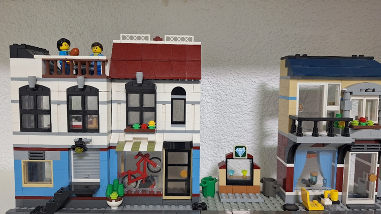
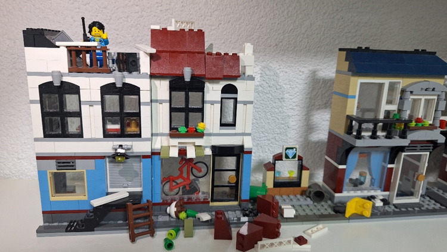
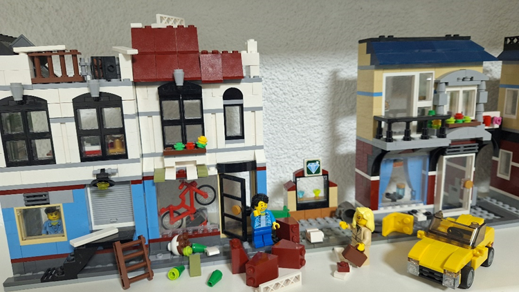
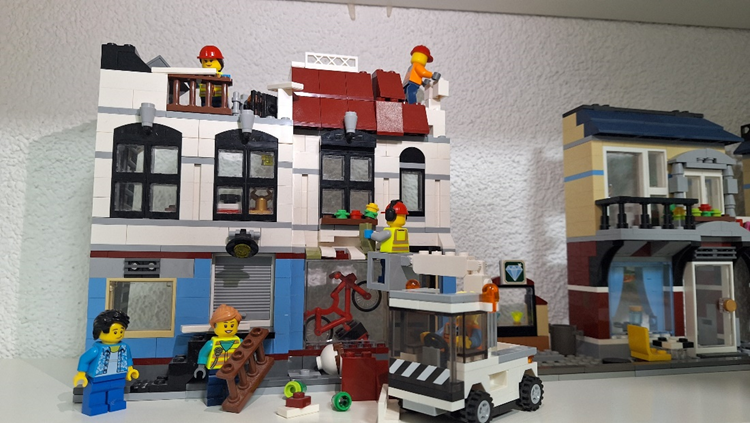
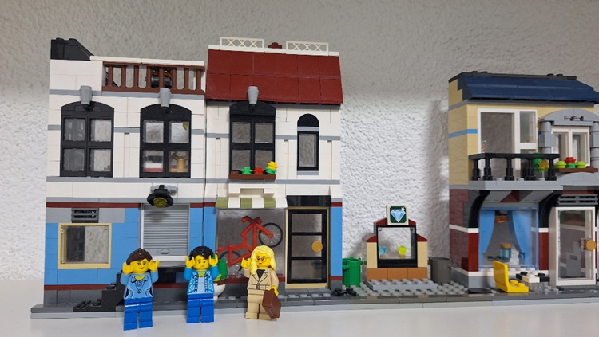

Wie läuft ein Versicherungsfall ab?
Meldung und Dokumentation.
- Ein Schadensfall entsteht.
- Zuerst sollte man den Schadensfall sorgfältig dokumentieren und beschädigte Gegenstände aufbewahren.
- Zudem sollte man von allen Beteiligten Name und Telefonnummer notieren.
- Dann sollte man den Schaden möglichst schnell der Versicherung melden.
Schadensprüfung durch die Versicherung.
- Die Versicherung überprüft dann, ob der konkrete Fall überhaupt versichert ist. Vielleicht braucht sie dazu noch ein Gutachten einer Fachperson
- Die Versicherung prüft auch, ob es sich nicht um einen Betrugsversuch handelt.
- Falls der Schaden durch die Versicherung gedeckt ist, macht die Versicherung einen Vorschlag zur Schadensregulierung.
Schadensregulierung/Entschädigung.
- Wenn die versicherte Person diesem Angebot zustimmt, bekommt sie die abgemachte Entschädigung. Diese kann je nach Art des Schadens sehr unterschiedlich ausfallen. Zum Beispiel eine Reparatur des beschädigten Gegenstands oder ein Geldbetrag.
Quellen:
- Wikipedia:
- Allianz-Ratgeber:

Herr und Frau Müller leben in einem schicken Haus an der Zürcherstrasse.

In einer Nacht wütet aber ein grausamer Sturm bei ihnen und beschädigt ihr Dach und ihre Fassade. Doch zum Glück hat das Ehepaar eine Versicherung gegen solche Schäden abgeschlossen. Herr Müller macht schnell ein paar Beweisfotos und meldet den Schaden so rasch wie möglich der Versicherung.

Am nächsten Tag fährt frau Meier ihrer Versicherung vor und schaut sich den Schaden genauer an. Danach macht sie einen Vorschlag zur Schadensregulierung: Die Versicherung übernehme 90% der entstehenden Baukosten. 10% ist der Selbstbehalt.

Herr und frau Müller sind mit dem Angebot einverstanden. Kurz darauf kommen Bauarbeiter und Bauarbeiterinnen und flicken ihr Dach und die Fassade. Das beste dabei ist: Sie müssen nur den Selbstbehalt von 10% der entstehenden Kosten bezahlen. Der Rest übernimmt ihre Versicherung.

Das Ehepaar ist glücklich. Ihr Haus ist wieder in einem top Zustand. Dieses Mal sind sie noch glimpflich davongekommen dank ihrer Versicherung.